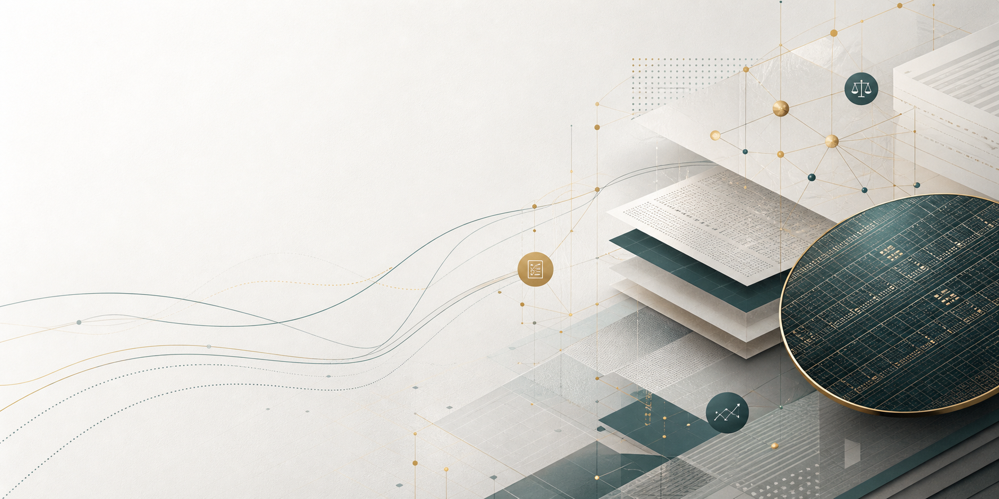

简历 / 人工智能战略与投研
陈祎
投资银行业务总监 | 人工智能战略与投研候选人 | 智能体工作流构建者
投资银行从业 6 年 10 个月，代表项目覆盖创业板上市申报、业务财务核查、交易所沟通文件、招股书和问询回复。目标优先级为 人工智能战略 / 产业投研，其次为解决方案；base 上海，可远程，也接受海外人工智能机会。
业务判断财务真实性、商业合理性、审核关注点。
智能体编排证据检索、差异比对、起草复核。
交付闭环问询回复、底稿、研究材料和验证报告。

核心能力案例
我的核心优势来自两类高约束实践：一是云汉芯城 IPO 中对业务财务核查、问询回复和披露交付的完整执行；二是在 1 个月内借助 CLI 与 Codex，把投行、投研、设计和质检工作流产品化为可运行的本地 AI 系统。
代表项目
公开招股书来源
云汉芯城（301563）创业板 IPO
我在国金证券投行体系内担任核心执行人员，负责业务和财务部分所有事项及常规/专项核查，主线是围绕财务真实性建立可复核证据链。
业务/财务负责业务与财务部分所有事项。
收入/成本/毛利率主责收入、成本、毛利率核查。
客户/供应商主责客户和供应商核查。
问询回复全程参与业务财务问题回复。
项目背景
创业板 IPO 的高约束执行场景
上市申报、审核问询和披露文件需要把业务真实性、财务真实性、底稿证据、交易所沟通材料和招股书口径保持一致。这类项目训练的是复杂问题拆解、事实链管理和高压交付。
负责事项业务核查、财务核查、常规核查和专项核查。
财务范围收入、成本、毛利率、客户、供应商。
交付物交易所沟通文件、招股书、问询回复、底稿证据链。
AI 工作流构建
把投行业务理解转成可运行的 AI 工作流
1 个月内借助 CLI 与 Codex vibe coding，完成四类本地系统：披露证据工作台、AI/半导体投研资产系统、A 股投委会与监控系统、研究输出设计系统。
3 个代码系统
1 个设计系统
1 个设计系统
披露证据工作台
Hermes · IPO 披露与证据工作台
IPO 事实链、证据链、问询回复、披露一致性、底稿交付、质量门和人审边界。
780 Python 文件
15.1 万行 Python
15.1 万行 Python
场景披露审阅、问询回复、尽调底稿、银行流水核查。
模块Gold/M2、共享证据、流程节点注册、质量门。
输出物底稿、审阅报告、运行清单、冻结链接。
能力迁移把投行专家工作拆成可检索、可复核、可冻结的工作流。
01场景识别
02证据/数据结构
03Agent Loop
04质量门
05输出物